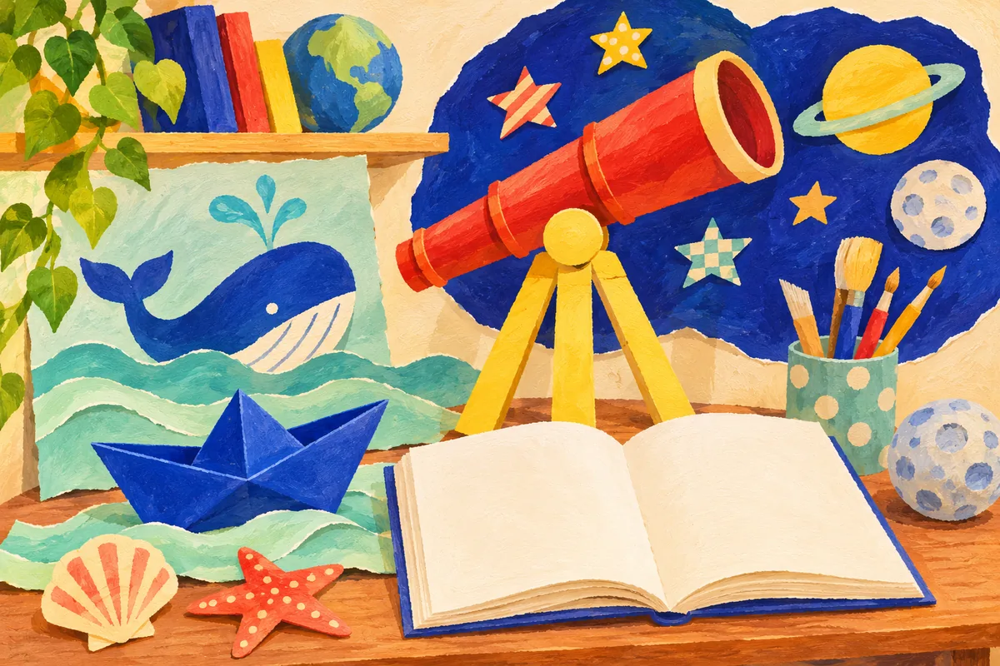

Starry Balloon
Тема: дружба и фантазия.
Математика, чтение, творчество и первые эксперименты. Найдите программу по интересам ребёнка и запишитесь на пробное занятие.

Логика, счёт, внимательность.
Опыты и исследовательские задания.
Словарный запас, истории, коммуникация.
Рисование, поделки, воображение.

Тема: дружба и фантазия.
Тема: смелость и любознательность.
Небольшие игры и задания по предметам.
Большая история-путешествие.